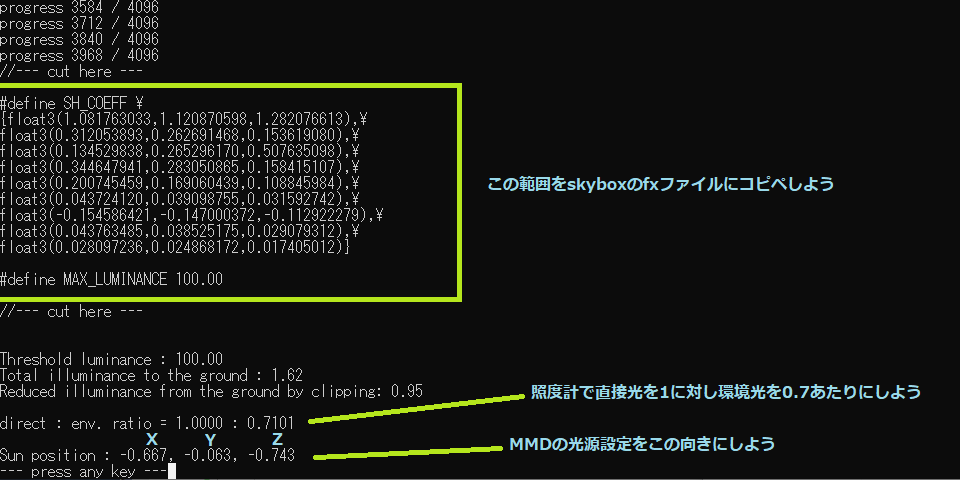

{kind=link}
{kind=link}

Version 2.40からsdPBR.pmxに照度計がつきました。表情操作パネル右下にある照度計モーフを上げると照度計が表示されます。モーフの値を変化させると非表示・明色・暗色と変えられるのでシーンの内容によって見やすい奴を使ってください。
照度計の見方ですが、一本目のバーが平行光源による地面の照度、二本目のバーがskyboxによる地面の照度を表しています。地面とは厳密に言うとXZ平面であり、法線を(0,1,0)に持っている平面とします。
一本目のバーが示す平行光源による地面の照度ゲージは、照明操作パネルから照明の明るさだけでなく向きを変えても伸縮し、地面と垂直な方向(MMDの照明操作パネルではX,Y,Z = 0,-1,0)から明るさ最大(赤・青・緑とも255に設定された状態)で照らすとバーは一番右端に達するはずです。この時、地面と平行に置かれた反射率1のLambert反射体(要するに真っ白な光沢のない板ポリ)の輝度が+1されます。
二本目のバーは環境光の照度であり、skyboxの上半球に納められた部分による地面の照度です(skyboxの下半分は地面と逆向きの面を照らすので考慮されません)。 これも同様に、照度計が画面の右端にちょうど達した状態で、地面と平行に置かれた反射率1のLambert反射体の輝度が+1されます。skyboxの内容によっては振り切っているかもしれません。
照度計を何に使うのかと言うと、環境光と直接光の明るさのバランスを取るために用います。先に挙げた画像では、晴天の海岸に天龍ちゃんが立っていますが、なんだかメリハリがありません。照度計を見ると平行光源の明るさより環境光の明るさの方が高くなっています。 基本的に、直接光に対する環境光の比率が増すほど絵は平坦な印象になり、曇った雰囲気になります。
晴天・真昼のシーンでは太陽の高度が90°の時(MMDの照明操作パネルではX,Y,Z = 0,-1,0の時)太陽から直接注いでくる光を4～5とすると、青空によって照らされる分は1程度と言われています。 実はこのskybox、sdPBRに付属のtool/hdr2sh.exeの-cオプションを用いて太陽周囲の超高輝度の部分を抜いた状態でディフューズ環境マップが作られています(詳細はhdr2shのマニュアルをどうぞ)。このため、
として、それぞれ分担させることが出来ます。ですから、sdPBR.pmxの環境色暗くモーフを上げたりライト明るくモーフを上げる事で、太陽から直接降る光と青空の光の比率をおおむね5:1に設定してみました
この状態に合わせてから、平行光源の向きをいじってskyboxに描いてある太陽の方向から差すように調整すると、晴天の環境として自然な感じになります。平行光源の色を変えたい場合はなるべく緑を変えないようにして赤・青の明るさを調整すると見た目の明るさは大きく変わらないのでお勧めです。見た目の明るさには緑が最も影響を与えるからです。ところで、晴天の野外の環境であればシーン全体の色合いを変えるには、平行光源の色よりも付属のポストエフェクトであるsdColorGradingSDRなどを使って色温度で調整した方がやりやすいと思います。
ところで、sdPBR.pmxのモーフ環境色明るく/暗くおよびライト明るく/暗くはそれぞれ照度計の目盛りに影響しますが、明るく/暗くは影響しません。これはなぜかというと、先に述べたように照度計は直接光と環境光の比率を取るための物ですから、両方とも同じだけ変化するモーフをいじっても目盛りの長さは変わらないのです。
曇りの照明環境を作る場合には、平行光源の比率を弱めたり、雲の切れ目のない雨天の場合では0にすれば、それっぽくなります。
更にもう一例やってみましょう。skyboxの作り方の項目でも取り上げましたが、skyboxの元になるパノラマHDR画像に太陽などの極端な高輝度の物体が入っていると、輝度の変化が大きく使いづらいskyboxになりがちですから、太陽をHDR画像から省いた状態の輝度を計算すると使いやすいskyboxになります。
ここで、太陽を取り除くことでHDR画像から失われた明るさ分を平行光源に割り当ててやれば、元のHDR画像に書いてあった照明を維持しつつ、使いやすくて物体にもちゃんと影の落ちる環境が出来上がりそうですね？
つまりこういう事です
具体的にどうやるかというと、skyboxを作る時に使う、tool/hdr2sh.exeに-cオプションを付けて起動します。
hdr2sh -c kiara_8_sunset_1k.hdr
この例ではHDRIHaven.com様より配布されている、sdPBRに同梱のskybox/texture/kiara_8_sunset_1k.hdrからskyboxを作りますが、ファイル名は適宜読み替えてください。このように-cオプションを付けると、輝度を100で制限し、輝度が100以上でカットされた分の輝度についての情報が表示されます
Version2.70より追加されたhdr2skyboxを使って作られたskyboxの.fxファイルには、この情報がそのまま出力されていますので、中を覗いてみてください

このうちSH_COEFFと、MAX_LUMINANCEが大事なことには間違いありませんが、他の情報が真ん中より下あたりに出ています。順に解説しましょう
| Threshold luminance | -cオプションで指定された閾値になる輝度です |
| Total illuminance | HDR画像に元々入っていた地面への照度です |
| Reduced illuminance | 輝度の制限によりカットされた照度です。この分を平行光源に割り当てれば良いと分かります |
| direct : env. ratio | 上記から算出された、平行光源(HDR画像から取り除かれた照度)と環境光(skyboxに残っている照度)の比率を示します。照度計でこの比率に設定すると良いです |
| Sun position | 最も高輝度だった点の位置を示します。この座標をMMDの照明設定パネルのX,Y,Zに割り当てれば、平行光源の向きが設定できます |
上記のSH_COEFFを設定したskyboxを作るだけではディフューズ環境マップは書き換わりますが、スペキュラ環境マップの方はそのままですから、MAX_LUMINANCEの定義もコピーすると、スペキュラ環境マップの輝度が抑えられます(※但しsdPBRconfig.exeで「動かないskyboxのみを使う」設定にしている場合は常にHDR画像そのままの内容がスペキュラ環境マップとして使われるので、MAX_LUMINANCEの指定は無効になります)
上記のSH_COEFFを設定したskyboxを作成し、直接光・環境光の明るさを照度計を見ながら調整すると以下のようになりました。強い西日の当たる様子が再現できたと思います。この結果は輝度をカットする閾値によっても微妙に変わってきますので、skyboxの内容に合わせて適宜調整すると良いと思いますが、基本的にデフォルトの100付近で問題ないと思います
強い西日の当たる様子がよく描写できるようになったと思います。ただ、日が極端に低かったり高かったりするとシャドウマップの誤差由来のノイズがでやすいので、絵作りがしやすいかと言われるとまた別の問題になります。数値を代入すれば確かにそれっぽい雰囲気を自動的に作れますが、最終的には貴方の目で決めることになると思います。
以上の話は、そもそも太陽の輝度が非常に高くて-cオプション無しでは扱いづらいようなskyboxの場合の話ですから、室内のHDR画像や、日没後の画像、木などによって太陽が遮られてしまっている画像の場合はまた別の話になるという事は忘れないでください。一般的に直射日光ギラギラではない「扱いやすい」HDR画像の場合は画像内に出ている影の濃さと平行光源による影の濃さを大体一致するように見た目で合わせて行けば問題ありません。
このように直接光と環境光のバランスを整えると現実的なライティングを行う事が出来ます。逆にそのバランスを崩すと、使っているskyboxのHDR画像は昼下がりだけど、正午に近いシーンとして調整したり、少し曇った雰囲気のシーンにしたりといった微調整が効くようになります。現実の映像制作においても照明装置を様々に駆使して絵を作っていきますから、納得のいくように調整してみてください。でも、一度決めた環境光・直接光のバランスはあんまりコロコロ変えない方がいいでしょう。ここを少しでもいじると、既に置かれたライトについてのパラメータを全部調整しなおすことになりかねません。
{kind=link}
{kind=link}